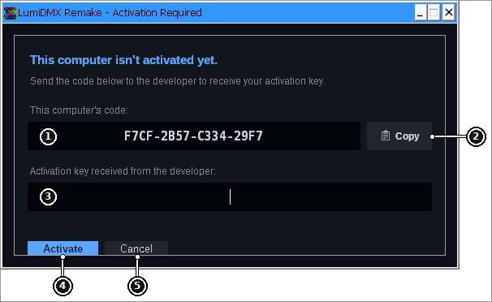

For: FullPlayer
LumiDMX Remake is activated for one computer. The first time it starts on a computer, instead of the program the window LumiDMX Remake - Activation Required appears.

The activation window.
| 1 | This computer's code - made from the computer's hardware. It is the same each time the program starts on this computer. |
| 2 | Copy - copies the code, ready to be pasted in an e-mail or a message. |
| 3 | The activation key you receive for this code. Paste it here (Ctrl+V). |
| 4 | Activate - checks the key; when it is right, the program opens. |
| 5 | Cancel - closes the program. |
From then on the program opens at once: the key is saved in dmx_simulator_settings.json, next to
the program. The title of the window ends in Licensed.
| Program | Activation |
|---|---|
| LumiDMX Remake Full | its own key |
| LumiDMX Remake Player | its own key (a Full key does not open the Player, nor the other way round) |
| 3D LumiDmx Remake | its own key, saved in 3D LumiDmx Remake.json next to it |
| LumiDMX Fixture Editor | no key of its own: it opens when the Full is activated in the same folder; otherwise it says Please register LumiDMX Remake. |
The code is the same for all of them on one computer; each program needs its own key for it.
dmx_simulator_settings.json: copy
the file next to the program, or enter the same key again.